● トレード手法のまとめ
いつでも見返せるように、3つのやり方を1か所にまとめました。画像を押すと、大きく見られます。
← 取引記録にもどる戒め：最短で勝つための順番
先に「場所」、次に「形」。実際のチャートで見る図です。押すと大きく見られます。
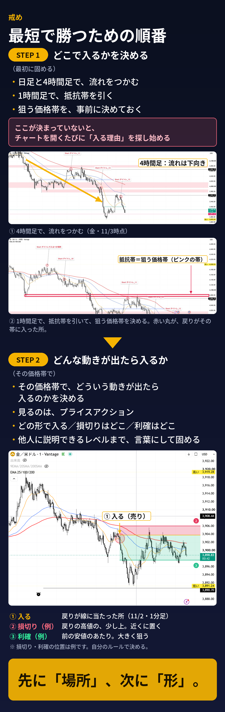
3つの手法（早見表）
スタイル1 メイン
自分の手法：1分足で、線が開く所に乗る
スタイル2 メイン
いぬさんの手法：1時間足の抵抗帯まで待って、1分足のプライスアクションで入る
スタイル3 サブ
マサさんの手法：1時間足の3本の並び → 5分足で戻りに入る。通知が来たら見る。微妙なときは見送る
自分の弱点と、その対策
上位足は下向きなのに、短期足（1・5・15分、1時間）で急騰したり上がってきたりすると、そのまま勢いが続きそうで、売れない。
- 急騰・急上昇している間は、売らない。勢いが続く怖さは、そのとおり。無理に止めようとしない。
- 1時間足の抵抗帯に、価格が届くのを待つ。「まだ場所に来ていないから打たない」と決める。
- 帯に入ったら、1分足のプライスアクションを見て、自分で判断して売る。
スタイル1：1分足で、線が開く所に乗る メイン
自分の手法。上位足を見て、1分足の移動平均線の「広がり」に乗る。
やること
- 上位足（1時間・15分・5分）で、大きな向きと、近くの帯を見る。
- 1分足の右のチャート（9EMA・20SMA・200SMA）で、青(20)からオレンジ(9)が離れて広がるのを待つ。
- 同時に、左のチャート（EMA 25・100・200）でも、青(100)からオレンジが離れて広がるのを見る。左右はほぼ同じ動きをするので、同時に見る。
- 広がり始めたら、その向きに乗る。オレンジが青に「触れただけ」で広がっていない所（線がからんでいる所）には、入らない。
- 赤(200)までの距離が近いときは、入らない。
「きれい」と「汚い」の見分け方
きれい（入る）
- 実体がヒゲより大きい（方向性のある値動き）
- 高値・安値が規則的で明確
- 短期の線が交差せず、同じ向きに並んで進む
- 価格が線の帯から大きく離れず、その上・下に沿って進む
汚い（入らない）
- 実体が小さく、上下に長いヒゲが多い（迷いの値動き）
- 高値・安値が不規則で、レンジ状態
- 短期の線が、収束・交差をくり返してからんでいる
- 価格が線を、何度も上下に貫通する
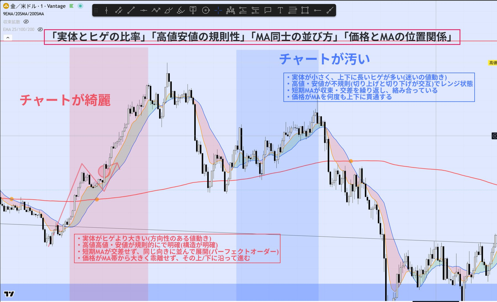
例1：9/17（同じ時刻を、4つの時間足で見る）
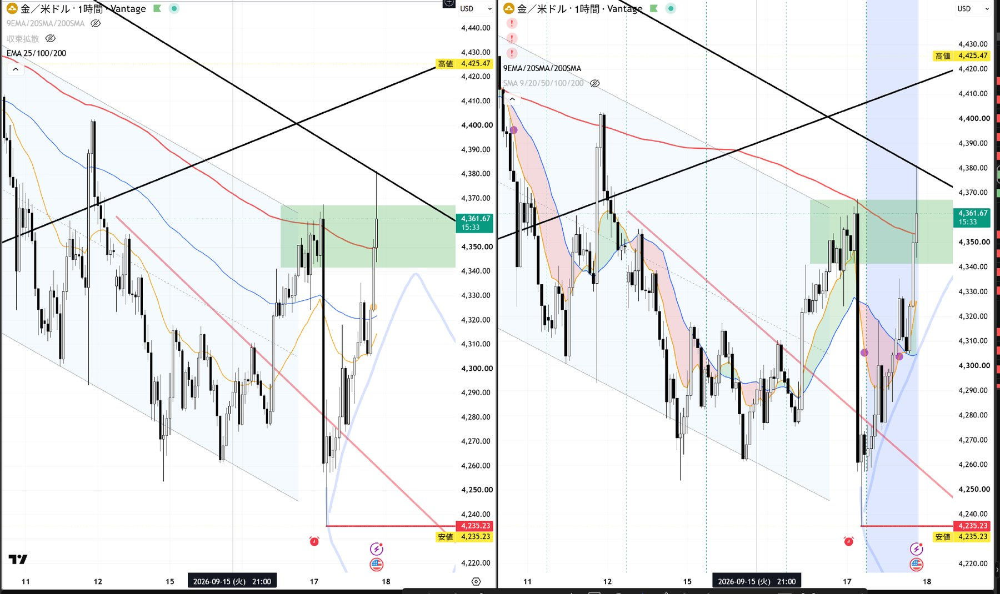
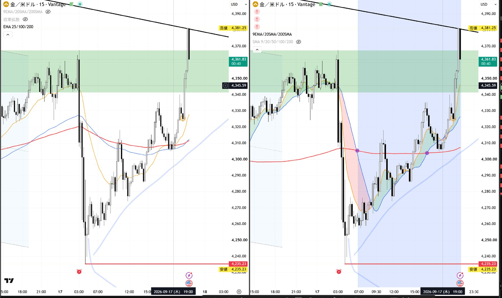
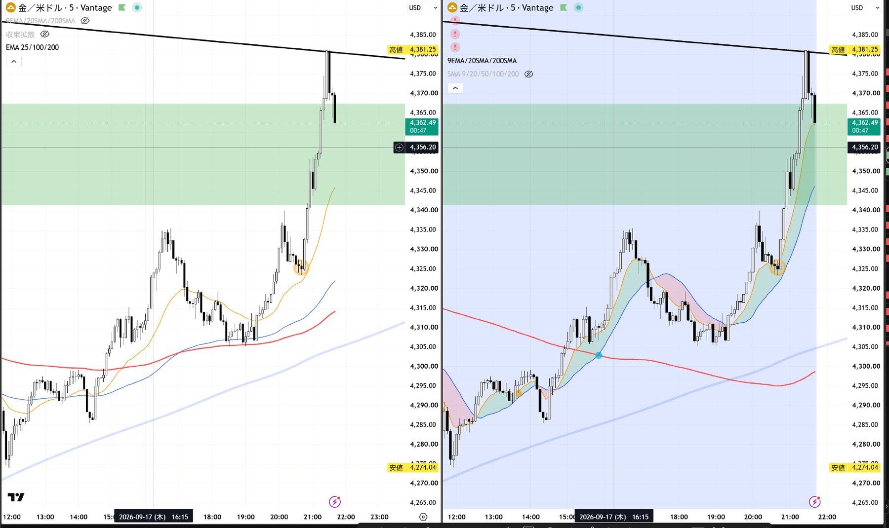
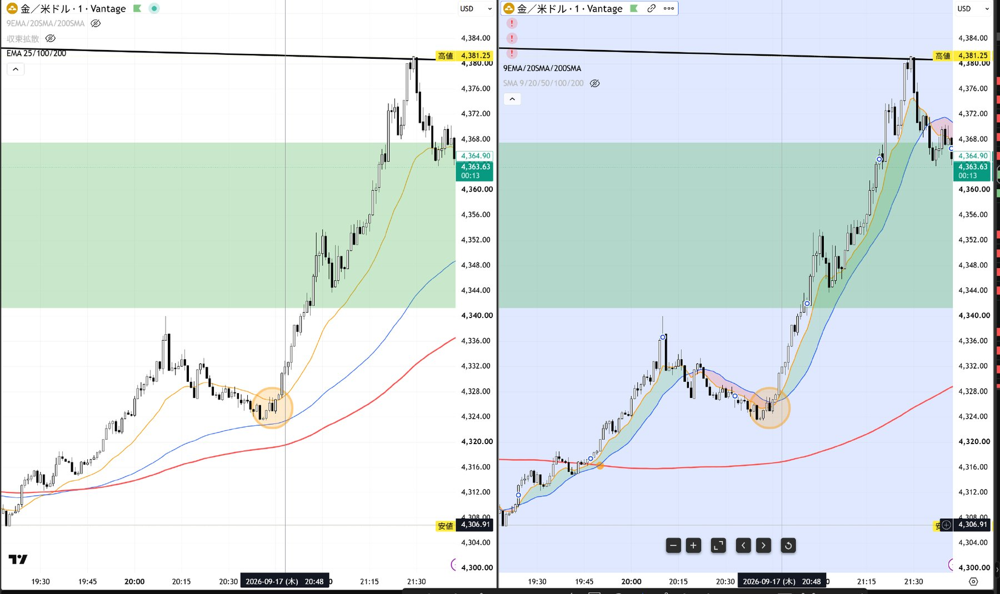
例2：10/27
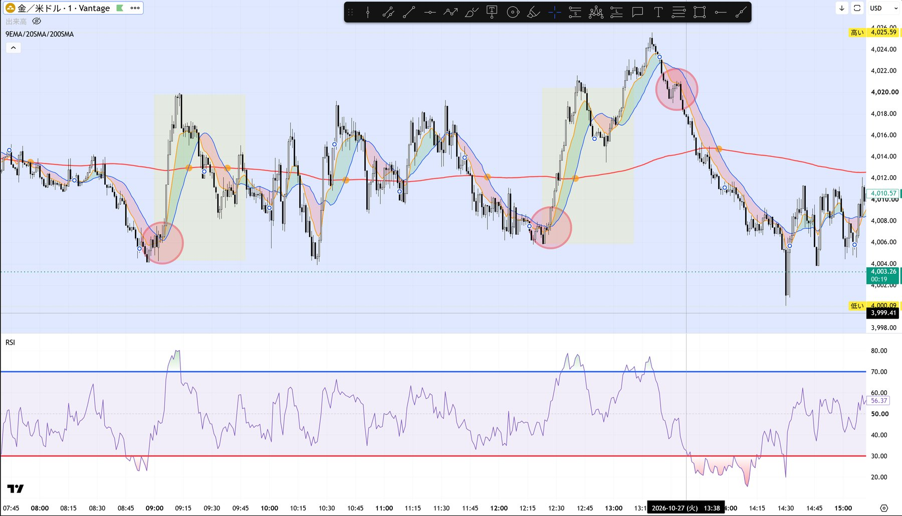
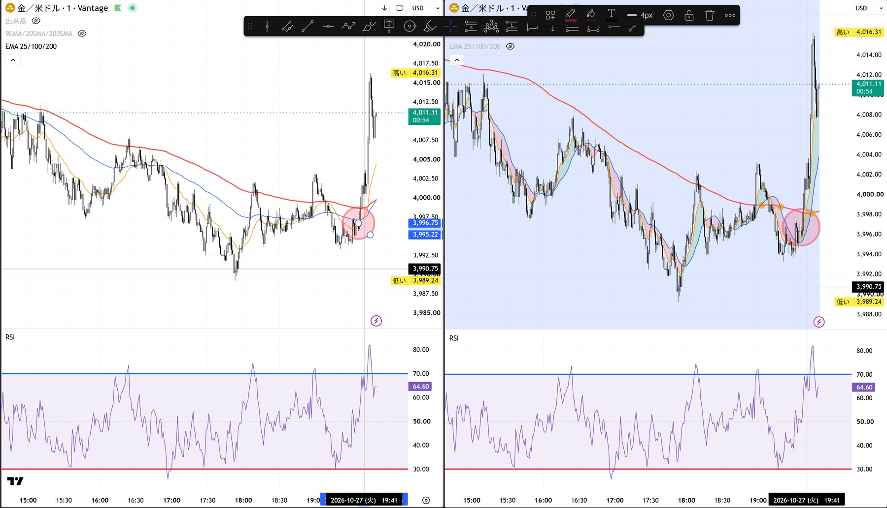
例3：11/4（きれいになったあと、最初の戻り）
そろっていたこと
- 3本の線（25・100・200）が、すべて上向きで、上から25 → 100 → 200の順に並んでいた。
- その前の上げが「きれい」だった（実体の大きい陽線が続き、安値が切り上がっていた）。
- 押しが、青(100)まで来て止まった。右のチャートでは、オレンジが青にタッチした。
- 赤(200)がすぐ下で支えになっていて、損切りが近くて済む（リスク約$5）。
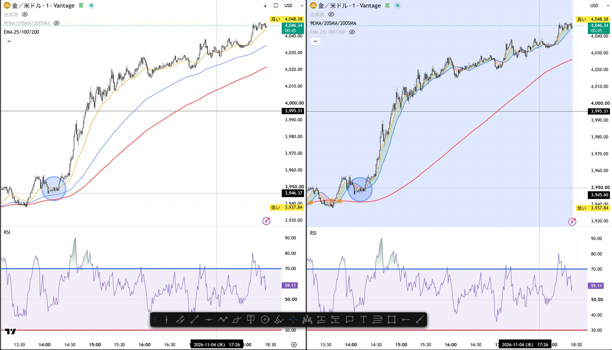
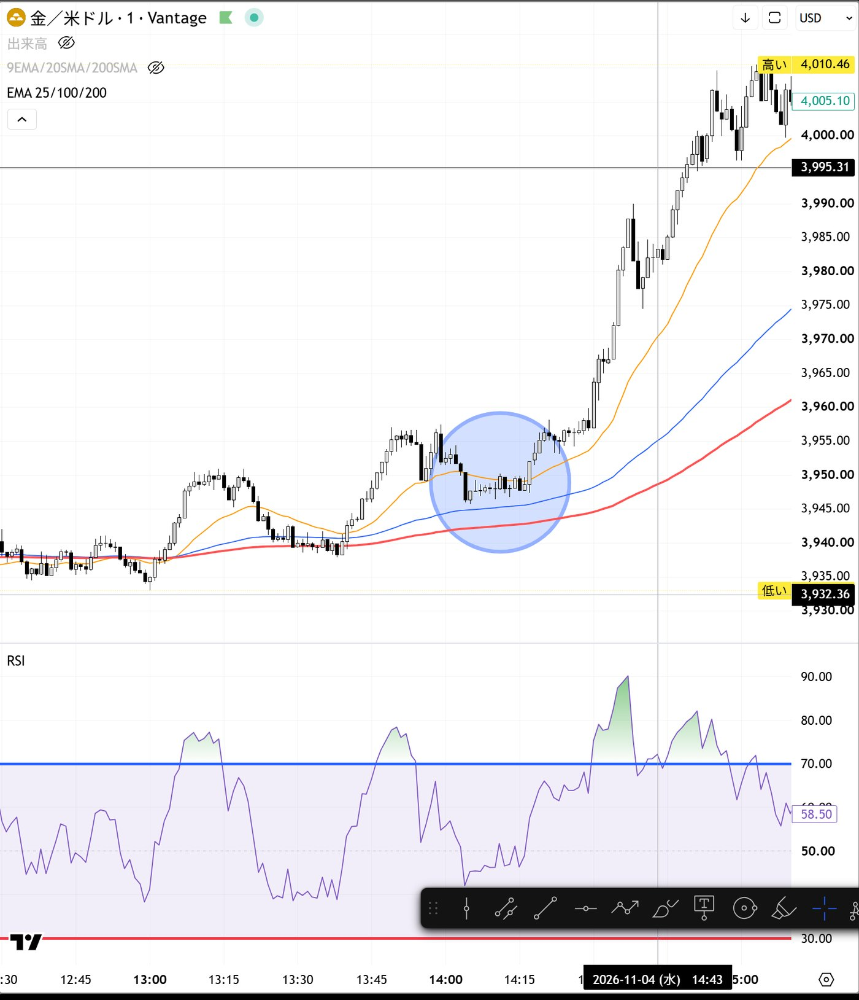
例4：11/5 深夜（押しのあと、一気に上げ）
そろっていたこと
- 左：25・100・200が、からんだ状態から、上向きに開いていった。
- 右：9と20の間が、緑の帯で大きく広がった（同じタイミングで開いた）。
- 押しが、100と200のあたりで止まり、そこから実体の大きい陽線が続いた。
- 左右のチャートが、同時に同じ形になっていた。
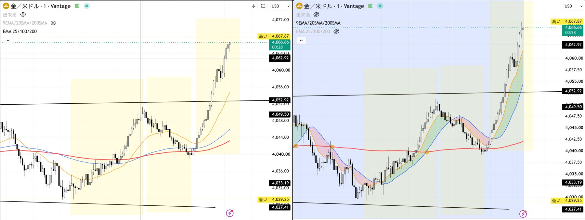
例5：11/5 午後（売りが弱まって、反発）
反発の前に見えていたこと
- 最初は、陰線ばかりが続いていた（売りの勢いが強い）。
- だんだん、陽線も混ざって出てくるようになった（売りの勢いが弱まってきた）。
- 赤(200)まで届く前に止まって、そこから反発した（黄色の四角）。
- 右のチャートでは、9と20が上向きにクロスして、緑の帯が出た。
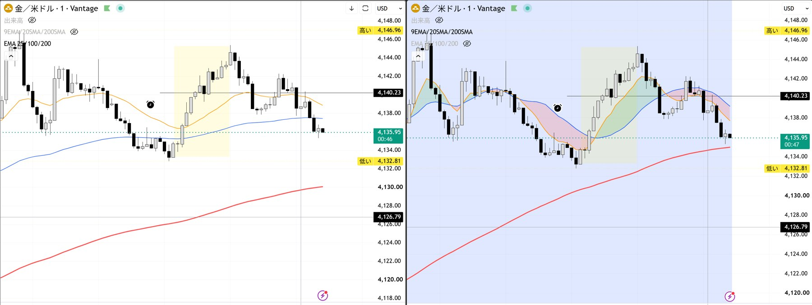
失敗例：11/5 夕方（左だけ見てロングして、損切り）
何が起きたか
左のチャートだけを見てロングに入り、損切りになった。赤丸の所で、右のチャートでは200SMAに当たって跳ね返されていた。
- 左の200はEMA、右の200はSMA。急に下げたあとは、SMAの方が高い位置に残る。
- 戻ってきた価格は、右の赤(200SMA)にちょうど当たって、2回とも止められた。左の赤は、約$4〜5下にあった。
- 左では、価格が25・100・200にからまれていた（からんでいる時は入らない／200に近い所は入らない）。
- 14時ごろ、右の赤を下に抜けたあと、戻りが抜けた線に止められる形になっていた。
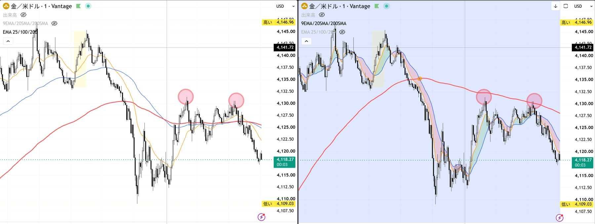
次からこうする
- 左右で見え方が違う時は、「そろっていない」と考えて、見送る。
- 左右の200が離れている時は、実際に反応している方の線を、壁として見る。
- 急に下げたあとの戻りは、遅い線（200SMA）まで来て止まりやすい。
スタイル2：1時間足の抵抗帯で待つ（いぬさんの手法） メイン
場所を先に決めて、そこに来るまで待つ。チャートを分析して入る。
やること
- 日足・4時間足で、流れの向きをつかむ。
- 1時間足で、抵抗帯を引いて、狙う価格帯を事前に決めておく。 ヒゲ先やレジスタンスなど、目立つ所に、線ではなく幅のある帯で引く。引けそうな所なら、古くても新しくてもよい。
- 価格が帯に入るまで、待つ。
- 帯に入ったら、1分足のプライスアクションを見て、自分で判断して入る。 どの形で入り、損切りをどこに置き、どこで利確するかを、人に説明できる言葉にしておく。損切りは近く、利確は大きく伸ばす。
決めていないと…チャートを開くたびに、入る理由を探し始めてしまう。
1分足のプライスアクションで見ていること（自分の見方）
- 1分足で、ローソク足と、移動平均線の位置関係を見る。
- ここから、買いの勢いが強いか、売りの勢いが強いかを、見比べる。
- 勢いは、ローソク足の長さ（実体）と、ヒゲの長さで見る。
勢いがある
- 実体が長い
- ヒゲが短い
- 同じ向きの足が続く
勢いが弱い・迷い
- 実体が小さい
- ヒゲが長い
- 上下に行ったり来たりする
まだ書いていないこと：損切りの置き場所、利確の決め方。
図（売りの例）
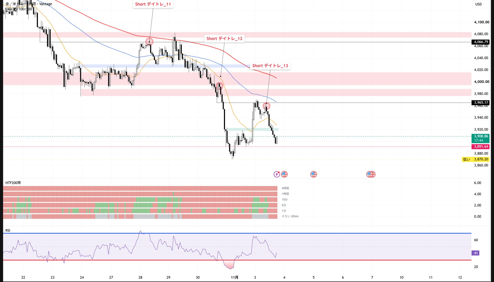
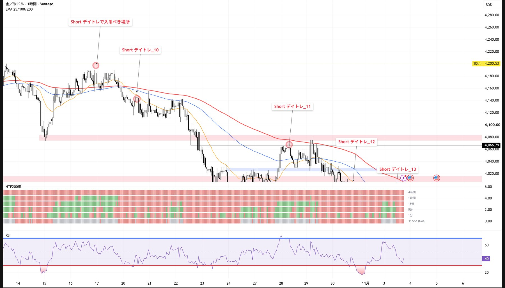
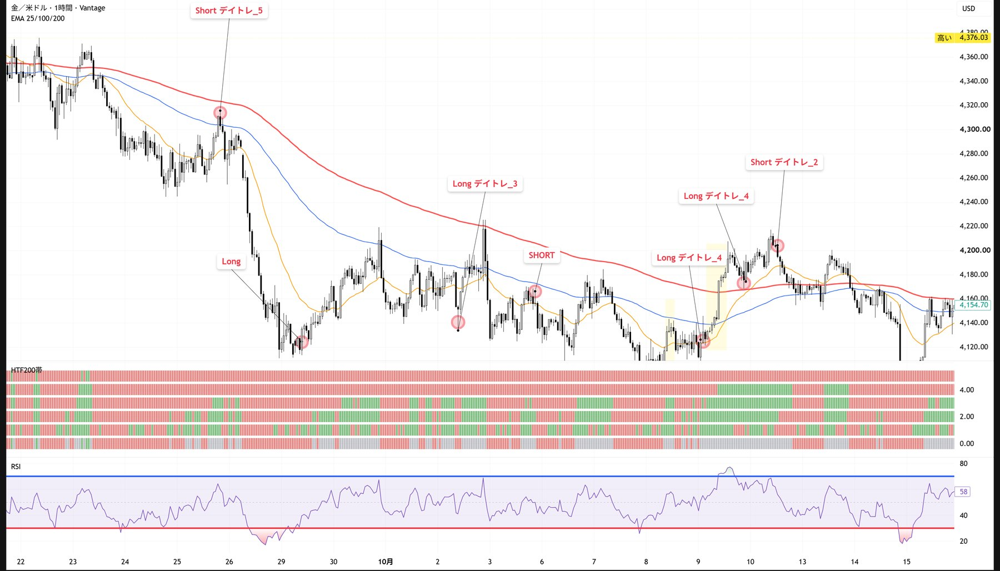
スタイル3：3本の並びを見て、5分足で戻りに入る（マサさんの手法） サブ
「MSパターン⑤」。通知が来たら見る。微妙なときは見送る。
図は売りの例（3本目が陰線）。2本目が陽線のとき、終値の線はゾーンの上側です。
やること
- 1時間足で、3本の並びを探す（MSパターン⑤）。2本目が1本目を包み、3本目が2本目を包む（高値〜安値を、次の足がすっぽり覆う）。
- 2本目を基準にする。2本目の「始値」と「終値」に線を引く。その間がゾーン。
- 5分足に切り替えて、ゾーンに戻ってきたら入る。下落サイン（▼）なら売り。線の中に戻るたびに売る。
- 損切り：5分足の実体が、終値の線を抜けて確定したら切る。ヒゲだけ抜けたら、切らない。
印の見方（推測）
- 印（▲▼）が付くのは、2本目ではなく3本目。
- 3本目が陽線なら上昇サインの▲、陰線なら下落サインの▼。
まだ分からないこと
- 5分足で、ゾーンに入った瞬間に入るのか、何かの形を待つのか。
- 利確の決め方（noteの別記事、10月10日公開）。
通知が来たときの、確認2つ
- 4時間足・1時間足の向きと、同じ向きのサインか。
- ゾーンの近くに、自分で引いた抵抗帯があるか。